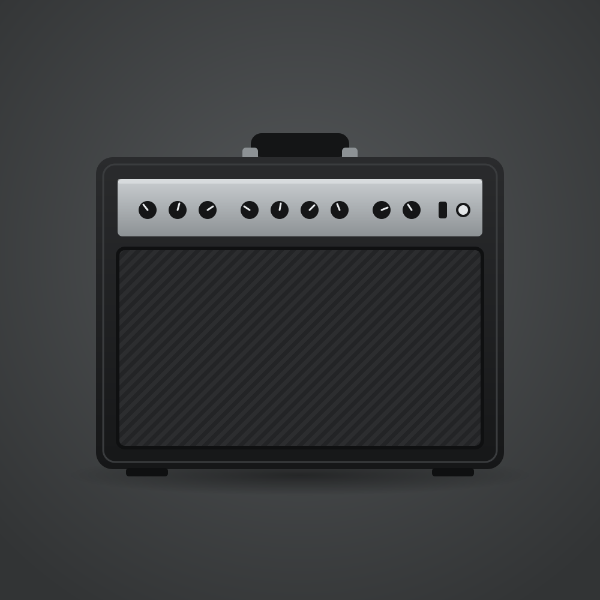

연주 장소의 크기와 밴드 편성에 맞춰 출력을 고려합니다.
Independent portfolio concept · Marshall 공식 사이트가 아닙니다.
Amplifiers / 기타 앰프
DSL40
Combo
연습실과 작은 공연장에서 기타의 소리를 직접 만드는 올밸브 콤보 앰프. 출력 전환과 두 채널로 공간에 맞춰 사용합니다.

Best fit
연습실에서 작은 무대까지
기타리스트가 출력과 톤을 직접 조절하며 연주하는 용도에 적합합니다.
각 채널에 두 가지 모드가 있고 40W/20W를 전환할 수 있습니다.
공식 사양상 무게가 22.9kg인 기타 콤보 앰프입니다.
Verified details
제품 사양
아래 항목은 Marshall 공식 제품 페이지의 표기를 기준으로 했습니다.
- 출력
- 40W · 20W 출력 저감 가능
- 스피커
- 12인치 Celestion V-Type × 1
- 채널
- 2채널 · 채널당 2모드
- 무게
- 22.9kg
사양 출처: Marshall · DSL40 Combo 공식 제품 페이지 · 확인일 2026-09-29. 제품 이미지는 형태를 단순화한 자체 일러스트로, 실제 제품과 세부가 다릅니다.
Go deeper
무대에 맞는 출력은?
앰프의 출력 수치만으로 공연장 적합성을 단정할 수 없습니다. 실제 공간과 마이킹 여부를 고려하는 Marshall의 가이드를 확인하세요.